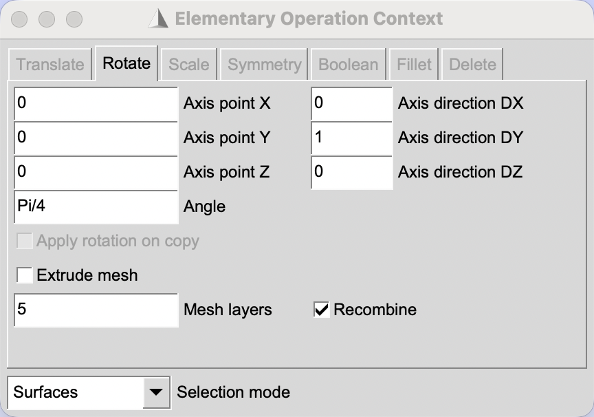
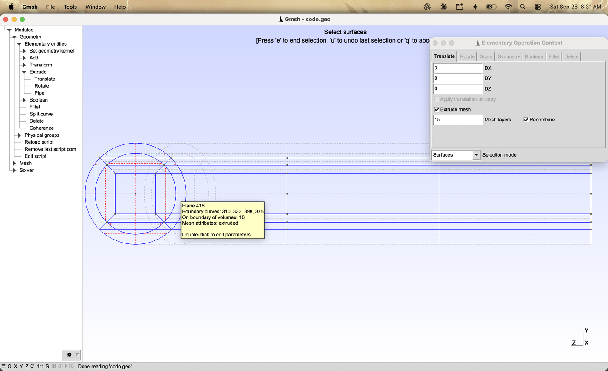
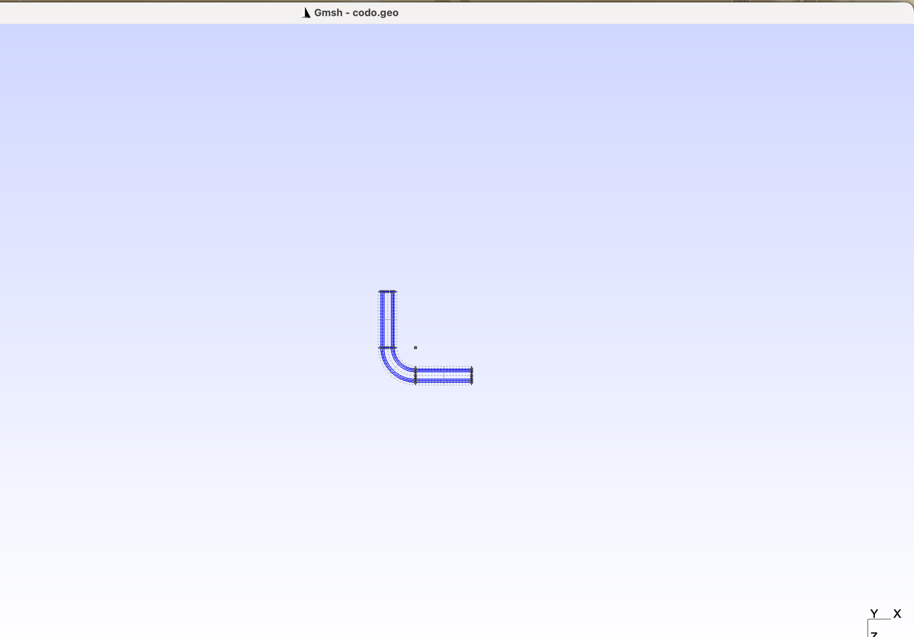
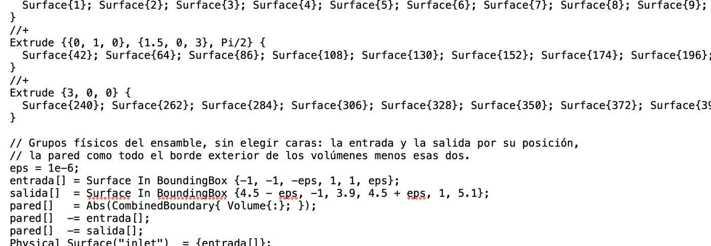
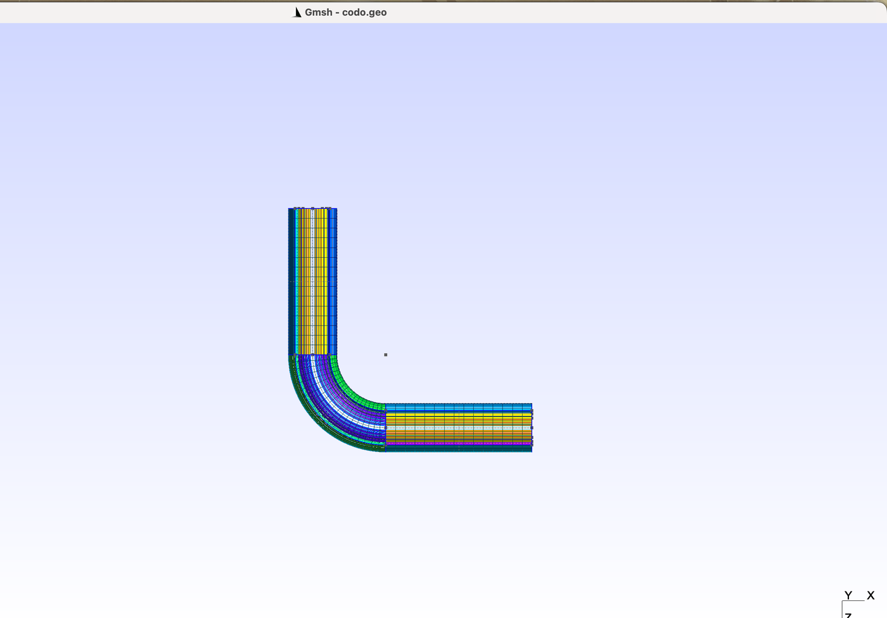
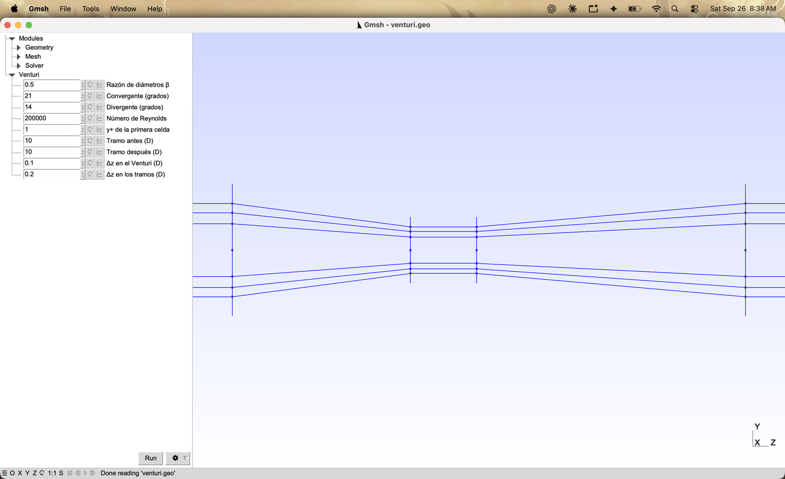
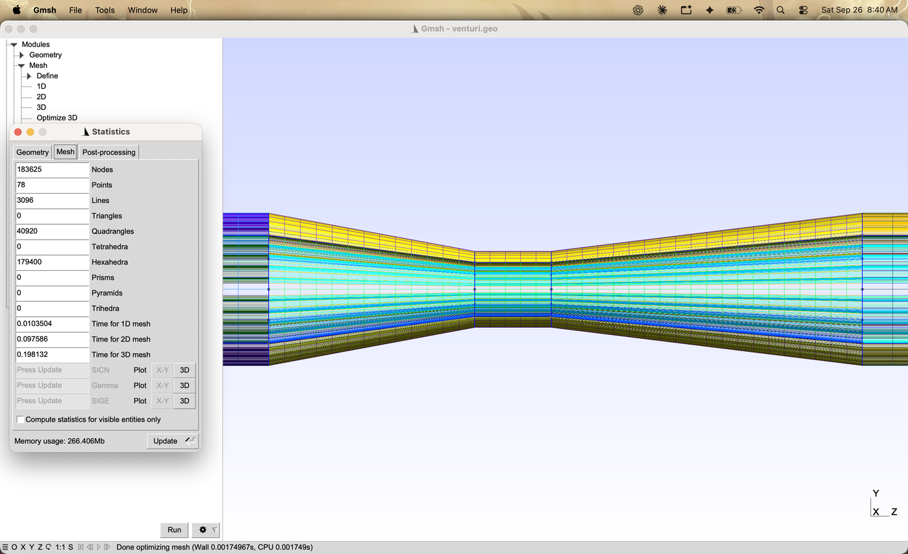
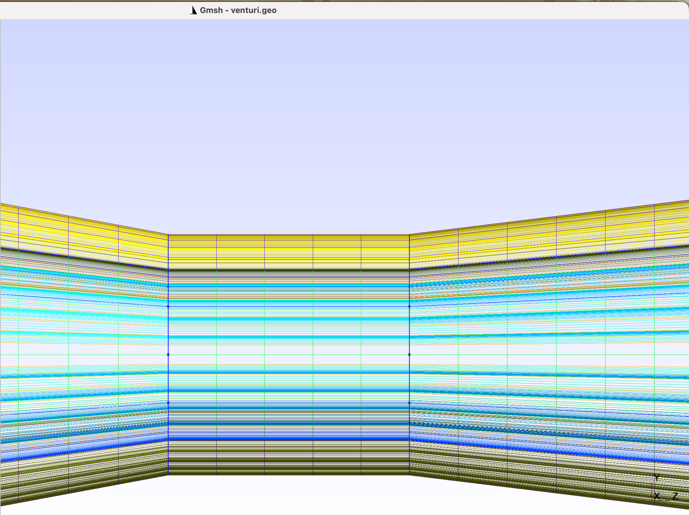
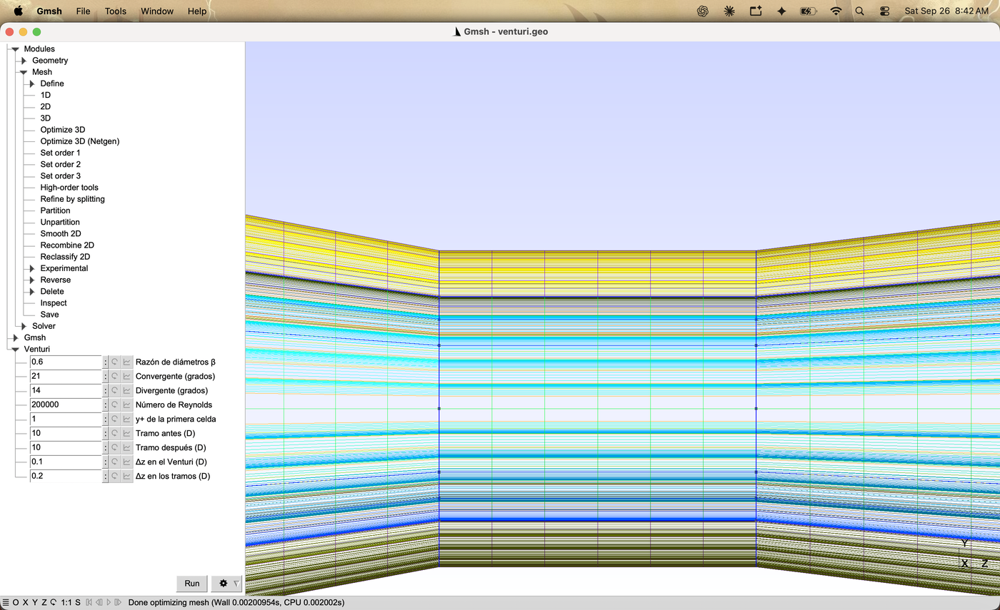
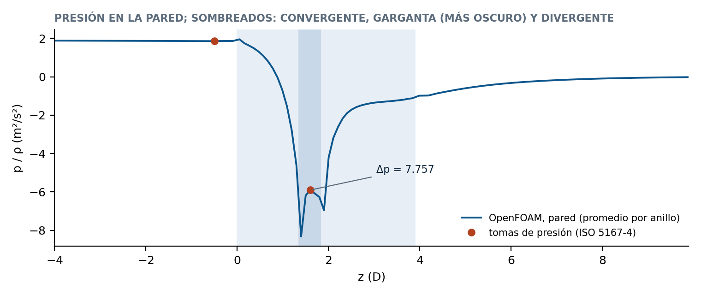

The Elbow and the Venturi: Rotated Extrusion and Blocks between Sections
Two pieces for the pipe of tutorials 3.1.1 and 3.1.2. The elbow is an extrusion around an axis, done with the buttons; the conical Venturi joins copies of the O-grid of different size with transfinite volumes, written in a script. Each piece grows from the faces of the previous one, so the mesh stays continuous without any extra step.
Gmsh · Tutorial 3.1.3
El codo y el Venturi: extrusión con rotación y bloques entre secciones
Dos piezas para la tubería de los tutoriales 3.1.1 y 3.1.2. El codo es una extrusión alrededor de un eje, hecha con los botones; el Venturi cónico une copias de la sección en O de distinto tamaño con volúmenes transfinitos, escritos en el archivo. Cada pieza nace de las caras de la anterior, así que la malla queda continua sin ningún paso adicional.
Gmsh · Tutorial 3.1.3
Krümmer und Venturi: gedrehte Extrusion und Blöcke zwischen Querschnitten
Zwei Teile für das Rohr aus den Tutorials 3.1.1 und 3.1.2. Der Krümmer ist eine Extrusion um eine Achse, über die Schaltflächen; das konische Venturi verbindet verschieden große Kopien des O-Gitters mit transfiniten Volumen, in der Datei geschrieben. Jedes Teil wächst aus den Flächen des vorigen, sodass das Netz ohne weiteren Schritt zusammenhängt.
Estimated reading: 40 minLectura estimada: 40 minLesedauer: ca. 40 minLevel: undergraduateNivel: licenciaturaNiveau: BachelorVerified on Gmsh 4.15.2 and OpenFOAM 13Verificado en Gmsh 4.15.2 y OpenFOAM 13Geprüft mit Gmsh 4.15.2 und OpenFOAM 13
Full English translation in preparation. Each section below carries a summary of its content; the complete text, figures and tables are available in the Spanish version, which the ES button above selects.
Build an elbow with Extrude > Rotate, extrude a straight outlet from its end faces, write physical groups that work for any assembly, and build a conical Venturi from scaled O-grid sections joined by transfinite volumes; check both meshes in OpenFOAM.
The idea
Each piece grows from the faces of the previous one
An extrusion reuses the faces it starts from, so pieces extruded one from another share nodes and the mesh is conformal with no merging step. A section that changes size cannot be extruded; it is joined to the next by volumes of six faces.
Recipe
The elbow in five steps, the Venturi in four
Five steps for the elbow with the buttons and four for the Venturi in the file.
Steps 1 to 3
Extrude ▸ Rotate
Extrude > Rotate asks for a point on the axis, its direction and the angle. The nine end faces are chosen from the front view, and the outlet piece from the view along +x.
Steps 4 and 5
Groups for any assembly, without choosing faces
Inlet and outlet by bounding box; the wall is the combined boundary of all volumes minus those two lists. The same six lines work for the elbow, the Venturi and any assembly.
Steps 6 to 9
Four sections and the blocks between them
Four copies of the O-grid at the inlet, the throat ends and the outlet, joined by straight lines, ruled side faces and transfinite volumes; the straight pipes are extruded from the end sections. ISO 5167-4 proportions: 21 degrees converging, 7 to 15 degrees diverging, throat one diameter long.
Worked example
The two meshes, predicted
The cell counts and the cell lengths along the elbow, predicted and compared with Gmsh.
OpenFOAM check
checkMesh and the discharge coefficient
The elbow mesh passes checkMesh like the straight pipe. The Venturi, with k-omega SST at Re = 200 000, gives a discharge coefficient close to the ISO value for a machined Venturi.
Files
codo_grupos.geo and venturi.geo
The group block for the elbow and the whole Venturi file.
Suggested practice
Toward the course activity
Steps toward the course activity: a long pipe, an elbow and a Venturi in one mesh.
Key points
What to keep from this guide
Extrude from faces to join; transfinite volumes where the section changes; groups by position.
Common mistakes
What goes wrong and what Gmsh does
Faces chosen from the wrong view, a Rotate axis through the pipe, a wall group with the inlet.
Sources
References
Gmsh manual; ISO 5167-4; White; OpenFOAM 13 user guide.
Objetivos de aprendizaje
Qué se debe poder hacer al terminar
La actividad del curso pide una tubería lo bastante larga para que el flujo se desarrolle, un codo y una sección convergente-divergente. Los tutoriales 3.1.1 y 3.1.2 resolvieron el tramo recto; éste agrega las otras dos piezas y la regla para unirlas. El ensamble completo queda para la actividad.
Construir un codo con Extrude ▸ Rotate a partir de la sección en O, con los botones.
Extruir cada pieza desde las caras del extremo de la anterior, eligiéndolas desde la vista en que quedan delante.
Escribir grupos físicos que funcionen para cualquier ensamble, sin elegir caras una por una.
Construir un Venturi cónico uniendo copias de la sección en O de distinto tamaño con volúmenes transfinitos.
Comprobar las dos mallas en OpenFOAM: checkMesh y el coeficiente de descarga del Venturi.
Qué hace falta. Gmsh 4.15.2 y OpenFOAM (openfoam.org). Se suponen el 3.1.1 (la sección en O, el recuadro, el Manipulator) y el 3.1.2 (la primera celda desde y⁺).
La idea
Cada pieza nace de las caras de la anterior
Una extrusión no copia las caras de las que parte: las reutiliza como una de las caras de los volúmenes nuevos. Si una pieza se extruye desde las caras del extremo de otra, las dos comparten esas caras, sus nodos y sus aristas, y la malla es continua —conforme— sin ningún paso para pegarlas. Esa es toda la regla para ensamblar una tubería: el tramo recto nace de la sección, el codo nace de las caras del final del tramo, el tramo de salida nace de las caras del final del codo.
La regla tiene un límite: una extrusión mantiene la sección igual. Traslada (Translate) o gira (Rotate) una copia exacta. Un Venturi cambia de diámetro, así que no se puede extruir: se construyen copias de la sección a otra escala y se unen con volúmenes de seis caras, cada uno con Transfinite Volume. Los tramos rectos de antes y de después sí se extruyen, desde la primera y la última copia.
El codo
En Rotate, cada punto de la sección describe un arco alrededor del eje. El radio de curvatura del codo es la distancia del eje al centro de la tubería: con el eje por x = 1.5 m y la tubería centrada en x = 0, Rc = 1.5 D. El eje debe quedar fuera de la tubería (Rc > R): si la atravesara, los arcos de un lado se cruzarían con los del otro.
El Venturi
Las proporciones son las de un Venturi clásico de la norma ISO 5167-4: un convergente de 21° de ángulo total, una garganta de largo igual a su diámetro y un divergente de entre 7° y 15°. Con la razón de diámetros β = d/D, los largos son
Con β = 0.5, 21° y 14°: Lc = 1.349 D, Lt = 0.5 D y Ld = 2.036 D.
Receta
El codo en cinco pasos, el Venturi en cuatro
El codo se hace con los botones, a partir de la sección del 3.1.1 sin extruir (el archivo tuberia_recta.geo hasta la línea de Recombine).
Tramo recto.Geometry ▸ Elementary entities ▸ Extrude ▸ Translate: DZ = 3, Extrude mesh con 15 capas, Selection mode en Surfaces, un recuadro sobre la sección y e.
Codo.Extrude ▸ Rotate: Axis point (1.5, 0, 3), Axis direction (0, 1, 0), Angle = Pi/2, 20 capas. Vista de frente con el Manipulator, un clic en el centro de cada bloque y e (Extrude {{0, 1, 0}, {1.5, 0, 3}, Pi/2} {…}).
Tramo de salida.Extrude ▸ Translate: DX = 3, DZ = 0, 15 capas. Vista desde +x (rotación 0, −90, 0; escala 0.5), un clic en cada bloque del final del codo y e.
Grupos físicos. Con Edit script, pegar al final del archivo el bloque de la sección «Grupos físicos» y Reload script.
Malla.Mesh ▸ 3D: 31 000 hexaedros.
El Venturi se escribe en el archivo venturi.geo (sección «Archivos»):
Cuatro secciones a las alturas z = 0, Lc, Lc + Lt y Lc + Lt + Ld, con el radio multiplicado por 1, β, β y 1.
Bloques entre secciones. Una línea recta por cada punto de la sección, una cara lateral por cada curva y un volumen de seis caras por cada bloque; todo transfinito.
Tramos rectos, extruidos desde la primera y la última sección.
Grupos físicos, con el mismo bloque del codo, y Mesh ▸ 3D: 179 400 hexaedros.
Pasos 1 a 3
Extrude ▸ Rotate
El tramo recto se extruye como en el 3.1.1: Translate, DZ = 3 m, 15 capas y las nueve superficies con un recuadro. Queda un tubo de 3 D cuyas caras del extremo, en z = 3, tienen los números 42, 64, …, 218.
Extrude ▸ Rotate
El diálogo es el mismo Elementary Operation Context de Translate, en su pestaña Rotate (figura 1). Pide un punto por el que pasa el eje, la dirección del eje y el ángulo:
Axis point = (1.5, 0, 3): el eje pasa a 1.5 m del centro de la tubería, a la altura de su extremo.
Axis direction = (0, 1, 0): paralelo a y, así que el codo gira en el plano x–z.
Angle = Pi/2: un cuarto de vuelta. El signo decide el sentido; con π/2 positivo y el eje por x = 1.5, el tubo dobla hacia +x.
Extrude mesh con 20 capas y Recombine.

Figura 1.Extrude ▸ Rotate, antes de llenarlo. El eje de giro se da con un punto (Axis point) y una dirección (Axis direction); Angle acepta expresiones como Pi/2. Por omisión el eje es el y que pasa por el origen y el ángulo es π/4. Las casillas de abajo son las mismas de Translate.
Las caras de partida son las del extremo del tramo recto. Con la vista de frente (Tools ▸ Manipulator, rotación 0, 0, 0; escala 0.7) quedan delante de las de z = 0, y un clic en el centro de cada bloque las elige (figura 2). El recuadro no conviene aquí: en esta vista las caras de la entrada quedan exactamente detrás de las del extremo, y el recuadro toma todo lo que encierra (en el 3.1.1, uno alrededor de la entrada tomó también las caras laterales). Con e, Gmsh escribe
Figura 2.Las nueve caras del extremo, desde el frente. Con la vista de frente (rotación 0, 0, 0 en el Manipulator) las caras de z = 3 quedan delante de las de z = 0: un clic en el centro de cada bloque las elige. La etiqueta amarilla confirma el número de la última, 218. El diálogo ya tiene el eje por (1.5, 0, 3), el ángulo π/2 y 20 capas.
El tramo de salida
El codo termina en x = 1.5, con la sección vertical mirando hacia +x. Para verla de frente, el Manipulator con rotación (0, −90, 0) y escala 0.5 (figura 3): la sección queda a la izquierda de la vista y el eje x apunta hacia quien mira. Sin esa rotación, la sección se ve de canto y sus caras no se pueden elegir. Translate con DX = 3 y DZ = 0, 15 capas, un clic en cada bloque y e. La tabla 1 resume las tres extrusiones.

Figura 3.El final del codo, visto desde +x. Rotación (0, −90, 0) y escala 0.5: se mira a lo largo del eje x, y la sección con la que termina el codo queda a la izquierda, al frente, sin reflejarse. La etiqueta de la última cara elegida dice «Plane 416».
Tabla 1.Las tres extrusiones del codo. Todas con Extrude mesh y Recombine. El número de las caras de partida es el que les dio Gmsh en la extrusión anterior; no hace falta conocerlo, porque se eligen con el ratón.

Figura 4.Las tres piezas. Vista desde +y (rotación 90, 0, 0): el tramo recto sube por z, el codo gira 90° alrededor del eje que pasa por (1.5, 0, 3), y el tramo de salida sigue por x. El punto suelto es el centro de la sección, que Gmsh no extruye.
Pasos 4 y 5
Grupos para cualquier ensamble, sin elegir caras
En el 3.1.1, los grupos físicos se eligieron cara por cara desde tres vistas distintas. Con un ensamble eso se vuelve impráctico: el codo tiene 12 caras de pared y el Venturi 20, y cada pieza nueva agrega más. La alternativa es describir los grupos por lo que son, no por sus números:
codo_grupos.geo
// Grupos físicos del ensamble, sin elegir caras: la entrada y la salida por su posición,
// la pared como todo el borde exterior de los volúmenes menos esas dos.
eps = 1e-6;
entrada[] = Surface In BoundingBox {-1, -1, -eps, 1, 1, eps};
salida[] = Surface In BoundingBox {4.5 - eps, -1, 3.9, 4.5 + eps, 1, 5.1};
pared[] = Abs(CombinedBoundary{ Volume{:}; });
pared[] -= entrada[];
pared[] -= salida[];
Physical Surface("inlet") = {entrada[]};
Physical Surface("outlet") = {salida[]};
Physical Surface("walls") = {pared[]};
Physical Volume("fluid") = {Volume{:}};
Mesh.MshFileVersion = 2.2;
Surface In BoundingBox devuelve las superficies que caben enteras en una caja. Una caja delgada en z = 0 encierra las nueve caras de la entrada; otra en x = 4.5, las de la salida.
CombinedBoundary{ Volume{:}; } devuelve el borde exterior del conjunto de todos los volúmenes: las caras que pertenecen a un solo volumen. Las caras compartidas entre bloques, y entre piezas, quedan fuera. Abs quita los signos de orientación que puede traer la lista.
pared[] -= entrada[]; quita de la lista los elementos de otra. La pared es todo el borde menos la entrada y la salida.
Pegado al final de codo.geo con Edit script (figura 5) y releído con Reload script, da inlet con 9 caras, outlet con 9, walls con 12 y fluid con los 27 volúmenes. En el Venturi sólo cambian las coordenadas de las dos cajas.

Figura 5.Los grupos del ensamble, al final del archivo. Arriba, las tres extrusiones que escribió la interfaz; abajo, el bloque pegado con Edit script. No menciona ningún número de cara.
Mesh ▸ 3D: 31 000 hexaedros, los 620 cuadriláteros de la sección por 15 + 20 + 15 capas (figura 6).

Figura 6.La malla del codo. Después de Mesh ▸ 3D: 31 000 hexaedros, 620 por sección en 15 + 20 + 15 capas. En el codo, las capas se abren en abanico: las celdas del lado de adentro son más cortas que las de afuera.
Pasos 6 a 9
Cuatro secciones y los bloques entre ellas
El Venturi se escribe en un archivo con su propio panel, «Venturi» (figura 7): la razón de diámetros, los dos ángulos, el número de Reynolds y el y⁺ para la capa de la pared (el cálculo del 3.1.2), los dos tramos rectos y el tamaño de las celdas a lo largo del eje.

Figura 7.venturi.geo abierto. El panel «Venturi» con sus nueve parámetros y, a la derecha, la geometría de lado: las cuatro estaciones son las líneas verticales; los tramos rectos se extienden fuera de la vista.
Las cuatro secciones
// ------------------------------------------------ las cuatro estaciones
Lc = (1 - beta) * R / Tan(angC / 2 * Pi / 180); // largo del convergente
Lt = beta * D; // garganta: tan larga como su diámetro
Lv = (1 - beta) * R / Tan(angD / 2 * Pi / 180); // largo del divergente
zs[] = {0, Lc, Lc + Lt, Lc + Lt + Lv};
ss[] = {1, beta, beta, 1}; // escala del radio en cada estación
nz[] = {Round(Lc / (dzv * D)), Round(Lt / (dzv * D)), Round(Lv / (dzv * D))};
Cada sección es la del 3.1.1 con todas sus coordenadas multiplicadas por la escala del radio en esa estación. Para no repetir cuatro veces 13 puntos, 20 curvas y 9 superficies, el archivo las crea en un For y numera la estación k sumando 100 k: la sección de la garganta tiene los puntos 101 a 113, las curvas 101 a 120 y las superficies 101 a 109. Las listas I[] y F[] guardan los puntos inicial y final de cada curva, y LZ[] los lazos de los nueve bloques.
// ------------------------------------------------ una sección en cada estación
// Numeración local de la sección (la del 3.1.1): puntos 1 a 13, líneas 1 a 12, arcos 13 a 20, superficies 1 a 9.
// La estación k suma 100 k a todos los números.
I[] = {2,3,4,5, 2,3,4,5, 6,7,8,9, 6,7,8,9, 10,11,12,13}; // punto inicial de las curvas 1 a 20
F[] = {3,4,5,2, 6,7,8,9, 10,11,12,13, 7,8,9,6, 11,12,13,10}; // punto final
LZ[] = {1,2,3,4, 1,6,-13,-5, 2,7,-14,-6, 3,8,-15,-7, 4,5,-16,-8,
13,10,-17,-9, 14,11,-18,-10, 15,12,-19,-11, 16,9,-20,-12}; // lazos de las 9 superficies
c45 = Cos(Pi / 4);
For k In {0:3}
z = zs[k]; s = ss[k]; p = 100 * k;
Point(p+1) = {0, 0, z};
Point(p+2) = {s*a, s*a, z}; Point(p+3) = {-s*a, s*a, z}; Point(p+4) = {-s*a, -s*a, z}; Point(p+5) = {s*a, -s*a, z};
Point(p+6) = {s*rm*c45, s*rm*c45, z}; Point(p+7) = {-s*rm*c45, s*rm*c45, z};
Point(p+8) = {-s*rm*c45, -s*rm*c45, z}; Point(p+9) = {s*rm*c45, -s*rm*c45, z};
Point(p+10) = {s*R*c45, s*R*c45, z}; Point(p+11) = {-s*R*c45, s*R*c45, z};
Point(p+12) = {-s*R*c45, -s*R*c45, z}; Point(p+13) = {s*R*c45, -s*R*c45, z};
For cu In {1:12}
Line(p+cu) = {p+I[cu-1], p+F[cu-1]};
EndFor
For cu In {13:20}
Circle(p+cu) = {p+I[cu-1], p+1, p+F[cu-1]};
EndFor
For b In {0:8}
Curve Loop(p+b+1) = {(LZ[4*b]/Fabs(LZ[4*b]))*(p+Fabs(LZ[4*b])), (LZ[4*b+1]/Fabs(LZ[4*b+1]))*(p+Fabs(LZ[4*b+1])),
(LZ[4*b+2]/Fabs(LZ[4*b+2]))*(p+Fabs(LZ[4*b+2])), (LZ[4*b+3]/Fabs(LZ[4*b+3]))*(p+Fabs(LZ[4*b+3]))};
Plane Surface(p+b+1) = {p+b+1};
EndFor
Transfinite Curve{p+1:p+4, p+13:p+20} = nq + 1;
Transfinite Curve{p+5:p+8} = nr + 1;
Transfinite Curve{p+9:p+12} = nb Using Progression 1 / g;
EndFor
El número de nodos es el mismo en las cuatro secciones: sólo cambia el tamaño. Así, el anillo de la pared tiene las mismas 25 celdas en todas, y la celda de la pared es β veces más delgada en la garganta.
Los bloques entre secciones
// ------------------------------------------------ bloques entre estaciones
// Entre las estaciones k y k+1: una línea recta por cada punto (2 a 13), una cara lateral por cada curva y un
// volumen de seis caras por cada bloque de la sección.
For k In {0:2}
p = 100 * k; q = 100 * (k + 1); L0 = 1000 * (k + 1);
For j In {2:13}
Line(L0 + j) = {p + j, q + j};
Transfinite Curve{L0 + j} = nz[k] + 1;
EndFor
For cu In {1:20}
Curve Loop(L0 + 100 + cu) = {p + cu, L0 + F[cu-1], -(q + cu), -(L0 + I[cu-1])};
Surface(L0 + 100 + cu) = {L0 + 100 + cu};
EndFor
For b In {0:8}
lat[] = {};
For m In {0:3}
lat[] += L0 + 100 + Fabs(LZ[4*b+m]);
EndFor
Surface Loop(L0 + b + 1) = {p + b + 1, q + b + 1, lat[]};
Volume(L0 + b + 1) = {L0 + b + 1};
EndFor
EndFor
Transfinite Surface{:};
Recombine Surface{:};
Transfinite Volume{:};
Entre dos secciones consecutivas, cada punto se une con su homólogo por una línea recta, que es una generatriz del cono. Cada curva de la sección barre así una cara lateral de cuatro lados —la curva de abajo, la de arriba y dos líneas—, que se define con Surface (una superficie reglada, no plana). Cada bloque de la sección da un volumen de seis caras: su superficie en la estación de abajo, la de arriba y las cuatro laterales. Con Transfinite Volume, Gmsh lo malla con hexaedros alineados, igual que Transfinite Surface hace con cuadriláteros.
Los tramos rectos se extruyen desde las superficies 1 a 9 (la primera estación, hacia −z) y 301 a 309 (la última, hacia +z): la regla de la sección «La idea». Los grupos físicos son los del codo con otras cajas. Mesh ▸ 3D da 179 400 hexaedros (figura 8).

Figura 8.La malla del Venturi: 179 400 hexaedros.Mesh ▸ 3D y Tools ▸ Statistics: todos hexaedros. La franja oscura junto a la pared es el anillo de 25 celdas de la capa límite.

Figura 9.La garganta, de cerca. Con la rueda del ratón sobre la pared de la garganta. Cada estación es la sección en O a escala, así que el anillo de la pared tiene las mismas 25 celdas en todo el Venturi, más delgadas en la garganta en proporción β.
Al cambiar β en el panel, el archivo recalcula los largos con los mismos ángulos y el número de capas de cada tramo (tabla 2, figura 10).
β
Convergente (D)
Garganta (D)
Divergente (D)
Capas (conv., garg., div.)
Celdas del anillo
0.5
1.349
0.50
2.036
13, 5, 20
25
0.6
1.079
0.60
1.629
11, 6, 16
25
Tabla 2.Lo que calcula venturi.geo. Con D = 1 m y los valores por omisión del panel: β = 0.5, convergente de 21°, divergente de 14°, Re = 200 000, y⁺ = 1; y con β = 0.6. Los largos salen de L = (1 − β) R / tan(α/2); la garganta mide un diámetro de garganta.

Figura 10.β = 0.6 desde el panel. Al cambiar la razón de diámetros, el archivo recalcula los largos del convergente y del divergente con los mismos ángulos y el número de capas de cada tramo; se vuelve a mallar.
Ejemplo resuelto
Las dos mallas, predichas
Enunciado. Antes de mallar, predecir el número de hexaedros del codo y del Venturi, y el largo de las celdas del codo por el lado de adentro, por el eje y por el lado de afuera.
Condiciones. Las de las tablas 1 y 2.
Codo. La sección tiene 620 cuadriláteros (3.1.1) y las tres piezas 15 + 20 + 15 = 50 capas: 620 × 50 = 31 000 hexaedros. checkMesh cuenta 31 000.
Largo de las celdas del codo. Cada capa gira π/40 radianes. Por el eje, a Rc = 1.5 m, la celda mide 1.5 × π/40 = 0.118 m; por dentro, en la pared a 1.0 m del eje, 0.079 m; por fuera, a 2.0 m, 0.157 m. El lado de afuera tiene celdas del doble de largo que el de adentro. Para compararlas, las del tramo recto miden 3/15 = 0.2 m.
Venturi. La sección tiene 10² + 4·10·5 + 4·10·25 = 1 300 cuadriláteros, con las 25 celdas del anillo. Las capas son 13 + 5 + 20 en el Venturi y 50 + 50 en los tramos rectos (10 D con Δz = 0.2 D): 138 capas y 179 400 hexaedros. checkMesh cuenta 179 400.
Preguntas.
¿Qué pasa si el eje del codo pasa por x = 0.5? Respuesta: el eje queda sobre la pared, Rc = R: las celdas del lado de adentro se reducen a un punto y la malla degenera. Con Rc menor que R, se cruzan.
¿Por qué no se usa el recuadro para elegir las caras del extremo del tramo recto? Respuesta: en la vista de frente, las caras de z = 0 y de z = 3 se superponen, y el recuadro toma todas las superficies que encierra; un clic, en cambio, toma sólo la de adelante.
¿Por qué el Venturi no se hace con Extrude y una escala? Respuesta:Extrude sólo traslada, gira o combina las dos; no cambia el tamaño de la sección.
Comprobación en OpenFOAM
checkMesh y el coeficiente de descarga
El codo
La malla que escribió la interfaz se convierte con gmshToFoam y pasa checkMesh sin avisos: 31 000 celdas, no ortogonalidad máxima de 26.4° (la del tubo recto del 3.1.1 era de 26.3°) y razón de aspecto máxima de 30.5. El codo no empeora la malla: sus celdas se abren en abanico, pero siguen siendo casi ortogonales porque el giro de cada capa es pequeño, π/40.
El Venturi
Con k-ω SST a Re = 200 000 (U = 1 m/s, ν = 5·10−6 m²/s), las mismas condiciones del 3.1.2 para y⁺ ≈ 1. La presión en la pared (figura 11) cae en el convergente, es mínima en la garganta y se recupera en parte en el divergente. El coeficiente de descarga se calcula con las tomas de presión de la norma:
\[ C = \frac{Q}{A_t\sqrt{2\,\Delta p/(1-\beta^4)}} = 0.9833, \]
contra 0.995 que da la norma para un Venturi con el convergente maquinado (tabla 3). Los dos picos de la figura, al principio y al final de la garganta, son las esquinas vivas entre los conos y el cilindro: el flujo se acelera al rodearlas. La norma pide redondear esas uniones con un radio; este Venturi, hecho sólo con líneas rectas, no lo tiene, y es su diferencia de geometría más clara con uno de la norma. Suavizar esas uniones es el tema de un tutorial posterior. El Δp medido, 7.757, es mayor que el de Bernoulli sin pérdidas, 7.500: la diferencia es la fricción y el perfil de velocidad no uniforme. La pérdida permanente —la presión que no se recupera seis diámetros después del divergente— es el 24 % de Δp, algo por encima del 5 al 20 % que se cita para un Venturi clásico; a esa distancia la presión todavía sube (0.042 m/s² por metro), así que parte de esa pérdida se recupera más adelante.

Figura 11.La presión en la pared. k-ω SST con Re = 200 000, U = 1 m/s. La presión cae en el convergente, es mínima en la garganta y se recupera en parte en el divergente; los puntos rojos son las tomas de la norma, a 0.5 D antes del convergente y a media garganta.
Magnitud
Valor
Presión a 0.5 D antes del convergente
1.857
Presión a media garganta
−5.899
Δp medido
7.757
Δp de Bernoulli, ½U²(1/β⁴ − 1)
7.500
Coeficiente de descarga C
0.9833
C de la norma (maquinado)
0.995
Pérdida permanente (fracción de Δp)
0.242
y⁺ medio en la garganta; en el tubo
1.99; 1.01
Tabla 3.El Venturi en OpenFOAM. k-ω SST, estacionario, U = 1 m/s, ν = 5·10⁻⁶ m²/s (Re = 200 000); presión cinemática. Las tomas promedian el anillo de caras de la pared más cercano a cada posición. El coeficiente de descarga es C = Q / [At √(2Δp/(1 − β⁴))]; la norma da 0.995 para un Venturi con el convergente maquinado.
El y⁺ de la garganta es el doble. El archivo calcula la primera celda con el número de Reynolds del tubo, y en el tubo se mide y⁺ = 1.01. En la garganta la celda es β veces más delgada, pero la velocidad es 1/β² veces mayor y la velocidad de fricción crece con ella: se mide y⁺ = 1.99. Para que la garganta tenga y⁺ ≈ 1, hay que pedir la mitad en el panel, o calcular la celda con las condiciones de la garganta.
Archivos
codo_grupos.geo y venturi.geo
El bloque de grupos físicos que se pega al final del archivo del codo:
codo_grupos.geo
// Grupos físicos del ensamble, sin elegir caras: la entrada y la salida por su posición,
// la pared como todo el borde exterior de los volúmenes menos esas dos.
eps = 1e-6;
entrada[] = Surface In BoundingBox {-1, -1, -eps, 1, 1, eps};
salida[] = Surface In BoundingBox {4.5 - eps, -1, 3.9, 4.5 + eps, 1, 5.1};
pared[] = Abs(CombinedBoundary{ Volume{:}; });
pared[] -= entrada[];
pared[] -= salida[];
Physical Surface("inlet") = {entrada[]};
Physical Surface("outlet") = {salida[]};
Physical Surface("walls") = {pared[]};
Physical Volume("fluid") = {Volume{:}};
Mesh.MshFileVersion = 2.2;
El Venturi completo:
venturi.geo
// Venturi cónico entre dos tramos rectos (tutorial 3.1.3). Unidades: metros.
// La sección en O del 3.1.1 se repite en cuatro estaciones —entrada del convergente, inicio y fin de la garganta,
// salida del divergente— a escala del radio local; entre estaciones consecutivas, 9 volúmenes transfinitos de seis
// caras. Los tramos rectos se extruyen desde las caras de la primera y la última estación. La capa de la pared se
// calcula desde y+, como en el 3.1.2 (turbulento, Petukhov). Proporciones de un Venturi clásico (ISO 5167-4).
// gmsh venturi.geo -3 -setnumber beta 0.6 -o venturi.msh
SetFactory("Built-in");
DefineConstant[
beta = {0.5, Name "Venturi/1Razón de diámetros β"},
angC = {21, Name "Venturi/2Convergente (grados)"},
angD = {14, Name "Venturi/3Divergente (grados)"},
Re = {200000, Name "Venturi/4Número de Reynolds"},
yplus = {1, Name "Venturi/5y+ de la primera celda"},
Lu = {10, Name "Venturi/6Tramo antes (D)"},
Ld = {10, Name "Venturi/7Tramo después (D)"},
dzv = {0.1, Name "Venturi/8Δz en el Venturi (D)"},
dzt = {0.2, Name "Venturi/9Δz en los tramos (D)"}
];
D = 1; R = D / 2; rm = 0.8 * R; a = 0.4 * R; nq = 10; gmax = 1.2;
// ------------------------------------------------ las cuatro estaciones
Lc = (1 - beta) * R / Tan(angC / 2 * Pi / 180); // largo del convergente
Lt = beta * D; // garganta: tan larga como su diámetro
Lv = (1 - beta) * R / Tan(angD / 2 * Pi / 180); // largo del divergente
zs[] = {0, Lc, Lc + Lt, Lc + Lt + Lv};
ss[] = {1, beta, beta, 1}; // escala del radio en cada estación
nz[] = {Round(Lc / (dzv * D)), Round(Lt / (dzv * D)), Round(Lv / (dzv * D))};
// ------------------------------------------------ la capa de la pared, desde y+ (como el 3.1.2)
f = 1 / (0.790 * Log(Re) - 1.64)^2;
h1 = 2 * yplus * D / (Re * Sqrt(f / 8));
Macro Razon
rA = 1.0 + 1.e-9; rB = 3.0;
For iter In {1:80}
rM = 0.5 * (rA + rB);
sM = eh1 * (rM^(eN - 1) - 1.0) / (rM - 1.0);
If (sM < eL)
rA = rM;
Else
rB = rM;
EndIf
EndFor
eR = 0.5 * (rA + rB);
Return
eL = R - rm; eh1 = h1;
eN = 1 + Ceil(Log(1 + eL * (gmax - 1) / h1) / Log(gmax));
Call Razon;
nb = eN; g = eR;
nr = Round((rm - a) / (2 * a / nq));
Printf("convergente %g D, garganta %g D, divergente %g D; capas %g, %g y %g", Lc, Lt, Lv, nz[0], nz[1], nz[2]);
Printf("y+ = %g -> primera celda h1 = %g m; anillo de %g celdas con razón %g", yplus, h1, nb - 1, g);
// ------------------------------------------------ una sección en cada estación
// Numeración local de la sección (la del 3.1.1): puntos 1 a 13, líneas 1 a 12, arcos 13 a 20, superficies 1 a 9.
// La estación k suma 100 k a todos los números.
I[] = {2,3,4,5, 2,3,4,5, 6,7,8,9, 6,7,8,9, 10,11,12,13}; // punto inicial de las curvas 1 a 20
F[] = {3,4,5,2, 6,7,8,9, 10,11,12,13, 7,8,9,6, 11,12,13,10}; // punto final
LZ[] = {1,2,3,4, 1,6,-13,-5, 2,7,-14,-6, 3,8,-15,-7, 4,5,-16,-8,
13,10,-17,-9, 14,11,-18,-10, 15,12,-19,-11, 16,9,-20,-12}; // lazos de las 9 superficies
c45 = Cos(Pi / 4);
For k In {0:3}
z = zs[k]; s = ss[k]; p = 100 * k;
Point(p+1) = {0, 0, z};
Point(p+2) = {s*a, s*a, z}; Point(p+3) = {-s*a, s*a, z}; Point(p+4) = {-s*a, -s*a, z}; Point(p+5) = {s*a, -s*a, z};
Point(p+6) = {s*rm*c45, s*rm*c45, z}; Point(p+7) = {-s*rm*c45, s*rm*c45, z};
Point(p+8) = {-s*rm*c45, -s*rm*c45, z}; Point(p+9) = {s*rm*c45, -s*rm*c45, z};
Point(p+10) = {s*R*c45, s*R*c45, z}; Point(p+11) = {-s*R*c45, s*R*c45, z};
Point(p+12) = {-s*R*c45, -s*R*c45, z}; Point(p+13) = {s*R*c45, -s*R*c45, z};
For cu In {1:12}
Line(p+cu) = {p+I[cu-1], p+F[cu-1]};
EndFor
For cu In {13:20}
Circle(p+cu) = {p+I[cu-1], p+1, p+F[cu-1]};
EndFor
For b In {0:8}
Curve Loop(p+b+1) = {(LZ[4*b]/Fabs(LZ[4*b]))*(p+Fabs(LZ[4*b])), (LZ[4*b+1]/Fabs(LZ[4*b+1]))*(p+Fabs(LZ[4*b+1])),
(LZ[4*b+2]/Fabs(LZ[4*b+2]))*(p+Fabs(LZ[4*b+2])), (LZ[4*b+3]/Fabs(LZ[4*b+3]))*(p+Fabs(LZ[4*b+3]))};
Plane Surface(p+b+1) = {p+b+1};
EndFor
Transfinite Curve{p+1:p+4, p+13:p+20} = nq + 1;
Transfinite Curve{p+5:p+8} = nr + 1;
Transfinite Curve{p+9:p+12} = nb Using Progression 1 / g;
EndFor
// ------------------------------------------------ bloques entre estaciones
// Entre las estaciones k y k+1: una línea recta por cada punto (2 a 13), una cara lateral por cada curva y un
// volumen de seis caras por cada bloque de la sección.
For k In {0:2}
p = 100 * k; q = 100 * (k + 1); L0 = 1000 * (k + 1);
For j In {2:13}
Line(L0 + j) = {p + j, q + j};
Transfinite Curve{L0 + j} = nz[k] + 1;
EndFor
For cu In {1:20}
Curve Loop(L0 + 100 + cu) = {p + cu, L0 + F[cu-1], -(q + cu), -(L0 + I[cu-1])};
Surface(L0 + 100 + cu) = {L0 + 100 + cu};
EndFor
For b In {0:8}
lat[] = {};
For m In {0:3}
lat[] += L0 + 100 + Fabs(LZ[4*b+m]);
EndFor
Surface Loop(L0 + b + 1) = {p + b + 1, q + b + 1, lat[]};
Volume(L0 + b + 1) = {L0 + b + 1};
EndFor
EndFor
Transfinite Surface{:};
Recombine Surface{:};
Transfinite Volume{:};
// ------------------------------------------------ los tramos rectos, extruidos desde las estaciones extremas
antes[] = Extrude {0, 0, -Lu * D} { Surface{1:9}; Layers{Round(Lu / dzt)}; Recombine; };
despues[] = Extrude {0, 0, Ld * D} { Surface{301:309}; Layers{Round(Ld / dzt)}; Recombine; };
// ------------------------------------------------ grupos físicos del ensamble, sin elegir caras
zfin = zs[3] + Ld * D; eps = 1e-6;
entrada[] = Surface In BoundingBox {-1, -1, -Lu * D - eps, 1, 1, -Lu * D + eps};
salida[] = Surface In BoundingBox {-1, -1, zfin - eps, 1, 1, zfin + eps};
pared[] = Abs(CombinedBoundary{ Volume{:}; }); // todo el borde exterior del conjunto de volúmenes…
pared[] -= entrada[]; // …menos la entrada…
pared[] -= salida[]; // …y la salida
Physical Surface("inlet") = {entrada[]};
Physical Surface("outlet") = {salida[]};
Physical Surface("walls") = {pared[]};
Physical Volume("fluid") = {Volume{:}};
Mesh.MshFileVersion = 2.2;
Práctica sugerida
Hacia la actividad del curso
Cada práctica es un paso hacia la actividad del curso: una tubería larga, un codo y un Venturi en una sola malla.
Un codo más cerrado. Repetir el codo con el eje por x = 1.0 (Rc = D). Predecir el largo de las celdas del lado de adentro y comprobar con checkMesh cómo cambian la no ortogonalidad y la razón de aspecto.
El codo en el archivo. Escribir el codo en un .geo parametrizado, a continuación de la tubería del 3.1.2: guardar la lista que devuelve cada Extrude, con ext[] = Extrude …, y extruir el codo desde las tapas ext[0], ext[6], … ext[48].
El ensamble. Unir en un solo archivo la tubería larga, el codo y el Venturi, cada pieza extruida desde la anterior. Los grupos físicos son el bloque de este tutorial con las dos cajas en la entrada y la salida del ensamble.
Puntos clave
Lo que hay que retener
Una pieza extruida desde las caras de otra comparte con ella esas caras: la malla del ensamble es continua sin pegar nada.
Extrude ▸ Rotate pide un punto del eje, su dirección y el ángulo; el eje va fuera de la tubería, a la distancia del radio de curvatura.
Las caras de partida se eligen desde la vista en que quedan delante: de frente para z = 3, desde +x para el final del codo.
Grupos para cualquier ensamble: entrada y salida con Surface In BoundingBox, la pared con CombinedBoundary menos esas dos.
Donde la sección cambia de tamaño, copias a escala unidas por volúmenes transfinitos de seis caras.
Errores frecuentes
Lo que falla y lo que hace Gmsh
La extrusión toma caras de más
Se usó un recuadro con caras superpuestas en la vista (la entrada detrás del extremo). Elegir con un clic en cada bloque, que toma sólo la cara de adelante.
El codo dobla hacia el otro lado
El signo del ángulo o de la dirección del eje. Con el eje (0, 1, 0) por x = 1.5 y π/2, el tubo dobla hacia arriba y hacia +x (hasta z = 4.85); con −π/2 gira hacia abajo, entre z = 1.0 y 3.0, y se mete dentro del tramo recto. Gmsh no avisa: hay que mirar la geometría antes de mallar.
Las caras del final del codo no se pueden elegir
Se ven de canto. Girar la vista para mirarlas de frente, con el Manipulator.
El grupo de la pared incluye la entrada
La caja de Surface In BoundingBox no encerró entera ninguna cara, porque su espesor era cero o quedó fuera de la sección: la lista de la entrada está vacía y no se resta nada. Revisar con Printf cuántas caras tiene cada lista.
gmshToFoam reporta un parche defaultFaces
Quedó una cara del borde fuera de todos los grupos (tutorial 1.1). Con CombinedBoundary no pasa, porque la pared toma todo lo que no es entrada ni salida.
Fuentes
Referencias
C. Geuzaine y J.-F. Remacle. Gmsh Reference Manual, versión 4.15: Extrude con rotación, Transfinite Volume, Surface In BoundingBox y CombinedBoundary. gmsh.info/doc/texinfo/gmsh.html.
ISO 5167-4:2022. Measurement of fluid flow by means of pressure differential devices inserted in circular cross-section conduits running full — Part 4: Venturi tubes.
F. M. White. Fluid Mechanics, 8.ª ed. McGraw-Hill, 2016. Capítulo 6: medidores de flujo por obstrucción.
Vollständige deutsche Übersetzung in Vorbereitung. Jeder Abschnitt enthält eine Zusammenfassung; der vollständige Text mit Abbildungen und Tabellen liegt in der spanischen Fassung vor, die über die Schaltfläche ES oben erreichbar ist.
Einen Krümmer mit Extrude > Rotate bauen, einen geraden Auslass aus seinen Endflächen extrudieren, physikalische Gruppen für jede Baugruppe schreiben und ein konisches Venturi aus skalierten O-Gitter-Querschnitten mit transfiniten Volumen bauen; beide Netze in OpenFOAM prüfen.
Die Idee
Jedes Teil wächst aus den Flächen des vorigen
Eine Extrusion verwendet die Ausgangsflächen weiter; auseinander extrudierte Teile teilen Knoten, das Netz ist ohne Zusammenfügen konform. Ein Querschnitt, der seine Größe ändert, wird durch Volumen mit sechs Flächen mit dem nächsten verbunden.
Ablauf
Der Krümmer in fünf, das Venturi in vier Schritten
Fünf Schritte für den Krümmer mit den Schaltflächen und vier für das Venturi in der Datei.
Schritte 1 bis 3
Extrude ▸ Rotate
Extrude > Rotate verlangt einen Achsenpunkt, die Richtung und den Winkel. Die neun Endflächen werden aus der Vorderansicht gewählt, das Auslassstück aus der Ansicht entlang +x.
Schritte 4 und 5
Gruppen für jede Baugruppe, ohne Flächen zu wählen
Einlass und Auslass per Bounding Box; die Wand ist der kombinierte Rand aller Volumen ohne diese zwei Listen. Dieselben sechs Zeilen gelten für Krümmer, Venturi und jede Baugruppe.
Schritte 6 bis 9
Vier Querschnitte und die Blöcke dazwischen
Vier Kopien des O-Gitters am Einlass, an den Halsenden und am Auslass, verbunden durch Geraden, Regelflächen und transfinite Volumen; die geraden Rohre werden aus den Endquerschnitten extrudiert.
Durchgerechnetes Beispiel
Die zwei Netze, vorhergesagt
Zellzahlen und Zelllängen entlang des Krümmers, vorhergesagt und mit Gmsh verglichen.
Prüfung in OpenFOAM
checkMesh und der Durchflusskoeffizient
Das Krümmernetz besteht checkMesh wie das gerade Rohr. Das Venturi ergibt mit k-omega SST bei Re = 200 000 einen Durchflusskoeffizienten nahe am ISO-Wert für ein bearbeitetes Venturi.
Dateien
codo_grupos.geo und venturi.geo
Der Gruppenblock für den Krümmer und die vollständige Venturi-Datei.
Übungsvorschlag
Auf dem Weg zur Kursaufgabe
Schritte zur Kursaufgabe: ein langes Rohr, ein Krümmer und ein Venturi in einem Netz.
Kernpunkte
Was man behalten sollte
Aus Flächen extrudieren, um zu verbinden; transfinite Volumen, wo sich der Querschnitt ändert.
Häufige Fehler
Was schiefgeht und was Gmsh tut
Flächen aus der falschen Ansicht, eine Drehachse durch das Rohr, eine Wandgruppe mit dem Einlass.
Quellen
Literatur
Gmsh-Handbuch; ISO 5167-4; White; OpenFOAM-13-Handbuch.